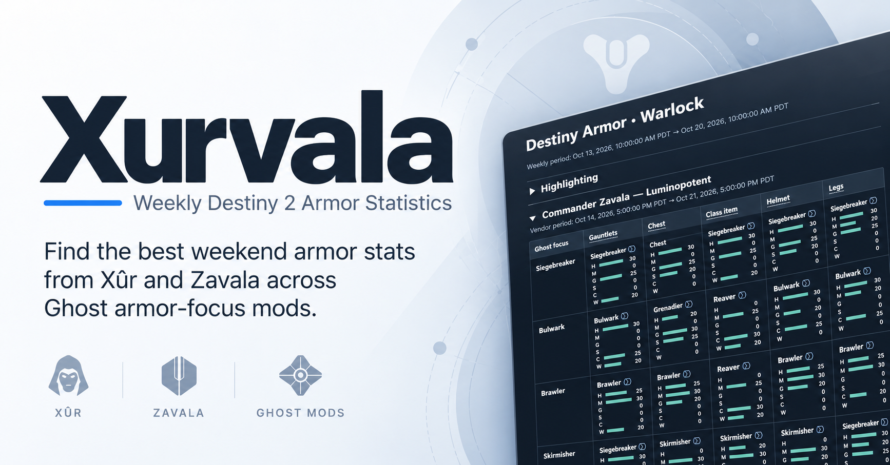

Xurvala
Compare the Destiny 2 armor rolls Xûr and Zavala offer each week. See how Ghost armor-focus mods change the stats for Hunters, Warlocks, and Titans, then browse past weeks or download the rolls as JSON.

Compare the Destiny 2 armor rolls Xûr and Zavala offer each week. See how Ghost armor-focus mods change the stats for Hunters, Warlocks, and Titans, then browse past weeks or download the rolls as JSON.